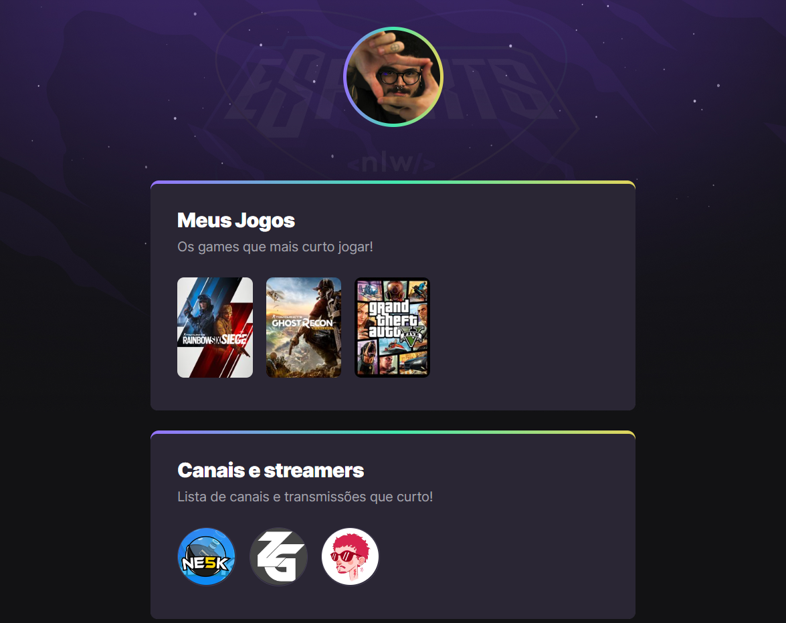
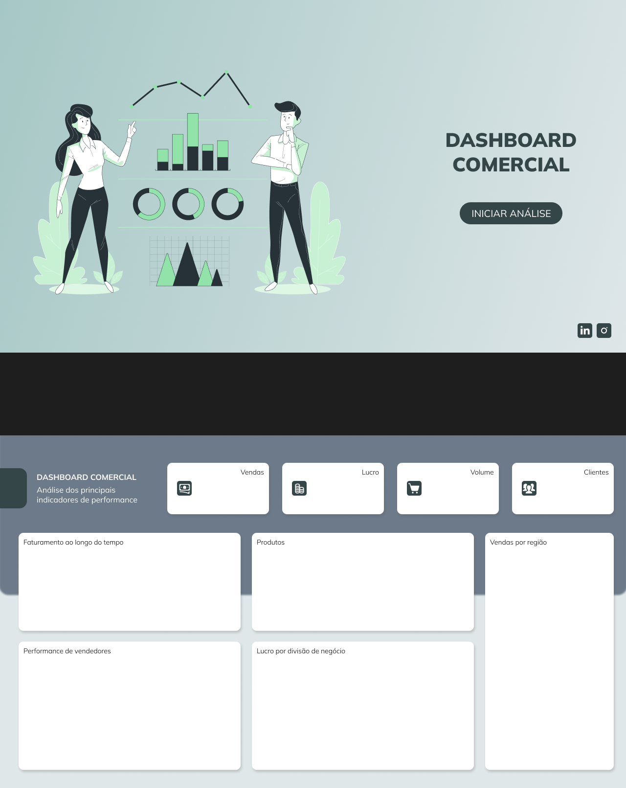
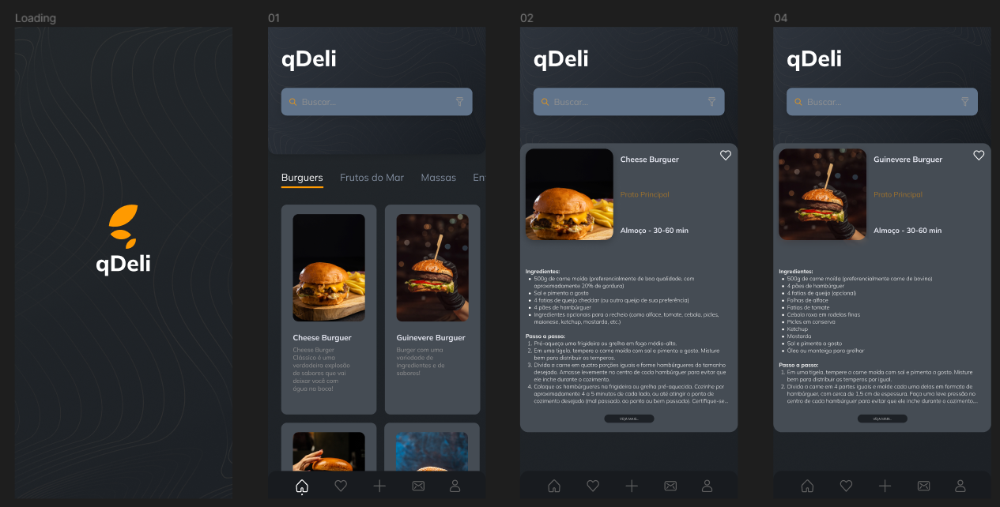

MEU TRABALHO
Aqui estão alguns dos meus projetos.
Click na imagem para expandir cada um





Em busca do código perdido
Sou um profissional apaixonado por tecnologia e desenvolvimento de software, com uma sólida formação acadêmica e experiência prática em várias áreas dessa indústria em constante evolução. Com uma base sólida em engenharia de software e uma mentalidade voltada para a resolução de problemas, busco constantemente desafios que me permitam expandir meu conhecimento e habilidades. Venho me especializando em diversas linguagens de programação, incluindo Python, JavaScript e Java, bem como em frameworks populares como React, Angular e Spring. Minha jornada na tecnologia começou com uma curiosidade insaciável em entender como as coisas funcionam e como posso contribuir para melhorá-las. Desde então, venho desenvolvendo e aprimorando minhas habilidades técnicas através de projetos práticos e experiências profissionais desafiadoras. Além do desenvolvimento de software, também tenho um interesse particular em áreas como inteligência artificial, aprendizado de máquina e computação em nuvem. Acredito firmemente no poder da tecnologia para transformar vidas e estou sempre em busca de oportunidades para aplicar meu conhecimento e criatividade para criar soluções inovadoras que impactem positivamente a sociedade.
João Paulo
Hard Skills
Front-End
Back-End
Web Desing
Aqui estão alguns dos meus projetos.
Click na imagem para expandir cada um
Deixe um feedback!

Passe por aqui para tomar uma xícara de , ou me deixe um recado: